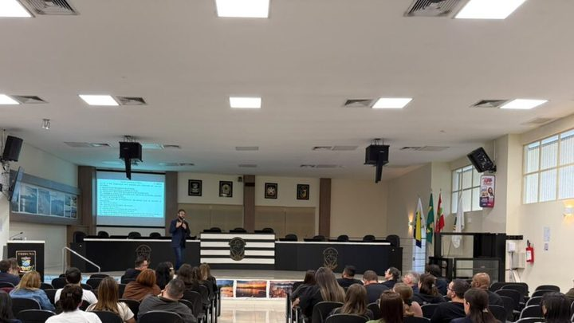

Fila Única de Itapema faz a sexta chamada, e a matrícula tem que ser feita até 9 de setembro
O outro prazo de escola que corre na cidade neste mês.
O curso é a distância, com aula presencial obrigatória toda terça à noite no Polo UAB, em Meia Praia. São quatro semestres, e pode se inscrever quem terminou o ensino médio e fez o Enem em qualquer edição de 2011 a 2025. A nota da Prefeitura não traz o número do edital nem o link da inscrição.
Em 30 segundos · Modo de Leitura, formato original Santa Informa
O IFSC abriu inscrição para um curso superior em Itapema.
É o tecnólogo em Gestão Pública.
São 30 vagas.
A inscrição vai até 25 de setembro.
É feita pela internet, no link do edital.
O curso dura quatro semestres, ou dois anos.
As aulas são a distância.
Mas tem encontro presencial obrigatório.
É toda terça-feira, à noite.
No Polo UAB Itapema, em Meia Praia.
Fica na Avenida Nereu Ramos, 3977.
No 2º piso do Shopping Russi & Russi.
Precisa ter ensino médio completo.
E ter feito o Enem entre 2011 e 2025.
O começo das aulas está previsto para 2026.
A nota não diz o número do edital.
Poder PúblicoPublicada em Redação Santa Informa
O Instituto Federal de Santa Catarina abriu inscrição para 30 vagas do curso superior de tecnologia em Gestão Pública, com aula no Polo UAB de Itapema. O prazo vai até 25 de setembro, e a inscrição é feita pela internet, no link que está dentro do edital do processo seletivo. O anúncio é da Prefeitura, publicado na sexta-feira, 4 de setembro. O início das aulas está previsto ainda para 2026.
Pode concorrer quem já concluiu o ensino médio e participou de alguma edição do Enem entre 2011 e 2025. São quinze edições aceitas, o que abre a porta para o adulto que fez a prova há mais de dez anos e nunca chegou a usar a nota.
São quatro semestres, ou dois anos. O ensino é a distância, mas com atividade presencial obrigatória às terças-feiras, no período noturno, no polo. Quem mora longe do Centro precisa contar com esse deslocamento semanal antes de se inscrever. O polo fica na Avenida Nereu Ramos, 3977, em Meia Praia, no 2º piso do Shopping Russi & Russi, e atende pelo telefone (47) 3267-1450 e pelo WhatsApp (47) 3368-2267.
O Polo UAB de Itapema é mantido pela Prefeitura e funciona como sala de aula local de instituições públicas que ofertam a distância. Na própria página do polo aparecem editais de UFSC, UDESC e IFSC, em cursos de pedagogia, matemática, tecnologia da informação, administração, física e ciências, além de especializações. É por esse caminho que a cidade recebe curso de instituição pública sem precisar de campus próprio.
Formar gente em gestão pública tem endereço aqui. Itapema saiu de 75.940 moradores no Censo de 2022 para 88.842 na estimativa do IBGE de 2026, alta de cerca de 17% em quatro anos, e a máquina que atende essa gente cresce junto. Em agosto, a própria Prefeitura levou os servidores de compras para treinamento nas regras da nova Lei de Licitações, sinal de que a demanda por qualificação na administração não é teórica. Na outra ponta do calendário escolar da cidade, a Fila Única fez a sexta chamada e a matrícula vai até 9 de setembro.
O resumo de 30 segundos está no topo e a versão completa é o texto acima. Aqui ficam as três leituras da casa sobre o mesmo assunto.
Clara, a otimista
Trinta vagas de curso superior público, com aula na própria cidade, é uma porta que não costuma abrir por aqui. Quem largou o estudo depois do ensino médio e guardou a nota do Enem numa gaveta agora tem onde usar ela.
E repare no detalhe da faixa do Enem, que vai de 2011 a 2025. Quem fez a prova aos dezoito e hoje está perto dos trinta e três continua no jogo. Curso feito à noite, uma vez por semana no presencial, cabe na vida de quem trabalha o dia inteiro.
Seu Prudêncio, o criterioso
Merece atenção o que a nota não conta. Não há número de edital, não há link direto, e o candidato é mandado procurar o endereço da inscrição dentro do documento. Com prazo até 25 de setembro, cada dia perdido procurando papel é dia a menos para juntar a documentação.
Vale acompanhar também o critério de classificação. Enem entre 2011 e 2025 é uma janela larga, e prova de quinze anos atrás não vale o mesmo que a de 2025 em conteúdo nem em escala de nota. Uma sugestão útil seria a Prefeitura publicar, junto do anúncio, como a nota será comparada e se existe reserva de vagas.
Feita a ressalva, a oferta é boa e no lugar certo. Manter o polo funcionando custa pouco perto do que rende, e formar gestor público numa cidade que cresceu quase vinte por cento em quatro anos é investimento que volta para a própria administração.
Caco, o sarcástico
Curso de Gestão Pública em Itapema, com aula no segundo piso do shopping. Estuda administração pública de manhã e vai olhar vitrine no intervalo, que é para não perder o costume.
A inscrição está aberta, mas o link mora dentro do edital, e o edital mora sabe-se lá onde. Primeira aula prática de gestão pública já começou, e é achar o documento.
Piada feita, o negócio é sério. Dois anos, à noite, sem sair da cidade, e sai com diploma de instituição federal. Tem muita gente pagando caro por bem menos que isso.
Fontes: Prefeitura de Itapema, nota publicada em 4 de setembro de 2026, de onde saem as 30 vagas, o prazo de 25 de setembro, a inscrição pela internet no link do edital, a exigência de ensino médio concluído e de Enem entre 2011 e 2025, os quatro semestres de duração, o encontro presencial obrigatório às terças à noite, o endereço na Avenida Nereu Ramos, 3977, e os telefones do polo. As instituições que ofertam no polo, UFSC, UDESC e IFSC, e a localização no segundo piso do Shopping Russi & Russi estão na página de serviço do Polo UAB de Itapema, na própria Prefeitura. A população de 88.842 na estimativa do IBGE de 2026 e os 75.940 do Censo de 2022 estão reunidos no nosso Raio-X da Região, com o link para a tabela do IBGE. Procuramos o edital no portal do IFSC e não encontramos o documento aberto até a publicação, o que é justamente a lacuna registrada no texto. A foto do topo é divulgação da Prefeitura de Itapema, de 2025.
O outro prazo de escola que corre na cidade neste mês.

Itapema · Poder PúblicoA demanda por qualificação dentro da administração não é teórica.
 Itapema · História
Itapema · HistóriaNão é a primeira vez que a cidade vira sala de aula do estado.